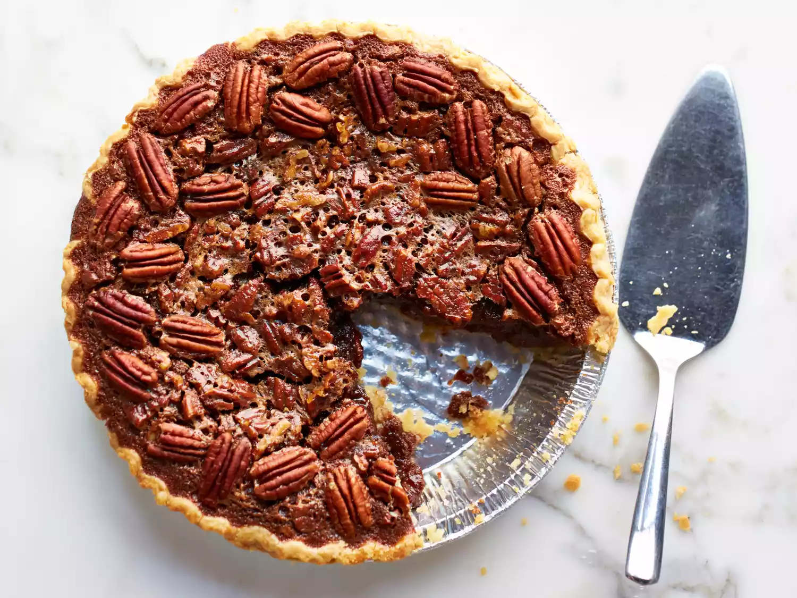

Pecan Pie

Description
Looking for something sweet? This pecan pie is sure to delight. This southern style pie is simple, delicious, and can be baked in about one hour.
Ingredients
- 1 3/4 cups sugar
- 1 1/4 cups chopped pecans
- 1/4 cup dark corn syrup
- 1/4 cup butter
- 1 Tbsp cold water
- 2 tsp cornstarch
- 1 tsp vanilla extract
- 3 large eggs
- 1 (9 inch) pie crust
Steps
- Preheat oven to 350 degrees F
- In a saucepan, combine sugar, dark corn syrup, water, cornstarch, and butter
- Place sauce pan over medium heat until boiling, then remove from heat
- With an electric mixer, beat eggs in a large bowl until frothy
- While mixing, slowly add cooked syrup
- Stir in salt, vanilla, and pecans
- Pour filling into pie crust
- Bake at350 degrees F until filling is set (approx. 45 to 50 minutes)
- Let cool before serving